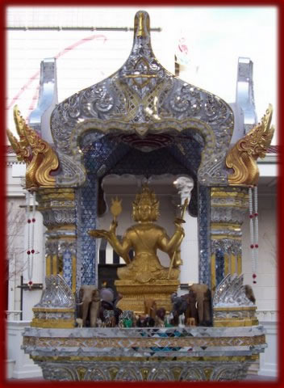

In the Hindu religion there is a trinity of gods, called a Trimurti, which are the three forms of God. Brahma, the creator, Vishnu, the preserver, and Shiva the destroyer. Buddhism, which branched off from Hinduism in the 5th century B.CE also recognize Brahma as a deity, which is why this shrine is referred to as Buddhist. Brahma was given the task of creating the world by the Supreme Being (like the Christian "God.") Although Hindus honor many Gods they do believe there is one "God" or Supreme Being that is above all. Brahma created a woman to help him with creating the universe. He fell in love with her and would stare at her and admire her beauty. She tried to avoid his eyes by stepping out his sight but when she did Brahma would sprout another head. She even jumped into the air to avoid his staring. According to myths Brahma was speaking badly about Shiva and cut of his fifth head. This is how Brahma came to have four heads. Brahma's four faces are said to represent the Four Divine States of Mind: loving kindness, compassion, sympathy, and equanimity. Brahma is not as widely worshipped as Vishnu and Shiva because it is believed his work is done for the time being.
|
 |